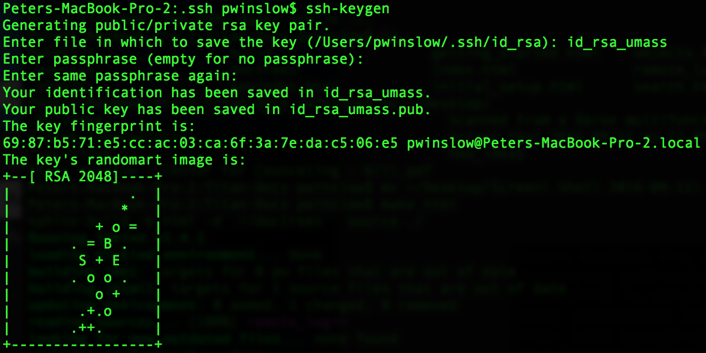

Getting Started¶
This section is designed to just help get you logged into the titan cluster.
Logging In¶
The first step in working with titan is to contact Joe to request
- a titan account as a member of the ACFI theory group
- a space on the /data2 disk (as far as I know, this is the most stable disk for analysis)
In the request, you should include your preferred username. Once your account is created, you’ll receive a temporary password. In order to change this to a password of your own choice, you’ll need to log onto titan. To do this, first make sure you are logged onto the Physics wifi network [1]. Then open a terminal [2] and type the following
ssh username@titan.physics.umass.edu
where username should be replaced by your chosen username. If this is your first time logging into titan, you will most likely see the following warning
The authenticity of host XXX.XXX.X.XXX (XXX.XXX.X.XXX) cannot be established. RSA key fingerprint is XX:XX:XX:XX:XX:XX:XX:XX:XX:XX:XX:XX:XX:XX:XX:XX. Are you sure you want to continue connecting (yes/no)?
This warning can safely be ignored. Just type yes, press enter, and you should then be logged into titan. In order to change your password, type the following
passwd
This will first prompt you for your current password (your temporary password) and then for your preferred password. Once that’s done, you should then give your preferred password whenever you log into titan via the ssh command above.
While in titan, you will be forced to use the terminal for everything. If you aren’t familiar with the unix terminal utility and what you can do with it, this is a handy reference but google is likely your best friend here.
Remote Login¶
If you are away from the ACFI or can’t login into the Physics wifi network, then there is a backdoor method for logging into titan. This consists of first logging into a server which is already onsite at LGRT called stepa0 and then, from there, logging into titan. To log onto stepa0, open a terminal and type
ssh everybody@stepa0.physics.umass.edu
When prompted for a password, use 406Amherst. Once into the remote server, then log into titan the standard way.
Automatic Login (Optional)¶
Logging into stepa0 first and then titan from there can get annoying after a little while with all the typing. In order to simplify the process somewhat, you can setup an automatic logins. To do this, open a terminal on your local machine and cd into your ~/.ssh folder. Here, you can create a public/private rsa key pair by typing
ssh-keygen
It will then give you the prompt: Enter file in which to save the key. I recommend choosing a convenient filename here, such as id_rsa_umass. You’ll then be prompted for a passphrase. Just press enter without writing anything (no passphrase is assigned). This isn’t needed as long as you’re careful with your own local machine and it also allows you to call ssh from within a shell script. If this was successful, you should see something resembling the following
This process will create two files, id_rsa_umass and id_rsa_umass.pub. While still in the ~/.ssh folder, open the config file with your favorite text editor (if no config file exists yet, just create it) and write the following lines at the end of it
Host everybody
User everybody
Hostname stepa0.physics.umass.edu
IdentityFile ~/.ssh/id_rsa_umass
ServerAliveInterval 10
and save and close it. You now need to copy the public key to the remote host. To do this, type
scp id_rsa_umass.pub everybody@stepa0.physics.umass.edu:~/.ssh/
using the above password when prompted and then ssh into stepa0 and cd into ~/.ssh. You should now see your id_rsa_umass.pub key as well as an authorized_keys2 file. In order to insert your public key into the list of authorized keys, type
cat id_rsa_umass.pub >> authorized_keys2
We can now further simplify the step into titan by adding the following lines to the config file in the ~/.ssh folder
Host titan
User username
Hostname titan.physics.umass.edu
with username replaced with your chosen titan username.
If you now start a new terminal on your local machine, you should be able to simply type
ssh everybody
to get into stepa0 without a password from your local machine. Once there, you should be to type
ssh titan
to log into titan, after you insert your titan password when prompted.
Note: it’s possible to repeat the procedure to log into stepa0 without a password for titan as well. However, in the interest of security, I’d recommend against this.
| [1] | If you haven’t gotten access to this network yet, the network is down (it happens...), or you’re currently not at the ACFI go to Remote Login. |
| [2] | In OSX, this is in your Applications/Utilities folder. For PC users, I would recommend installing ubuntu alongside windows either as a dual boot or installation within windows. |